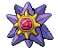

-
Pikachu #001

- Elétrico
Quando Pikachu acha alguma coisa nova, lança uma carga elétrica nela. Se você encontrar uma fruta torrada, é prova de que este Pokémon errou na intensidade de sua carga elétrica.
-
Snorlax #002

- Normal
Um dia normal da vida de Snorlax consiste em comer e dormir. É um Pokémon tão dócil que é fácil de ver crianças brincando em cima da sua barriga enorme.
-
Slowbro #003

- Grama
- Veneno
A cauda de Slowbro tem um Shellder grudado nela com uma mordida. Como resultado, a cauda não pode ser mais usada para pesca, o que faz Slowbro nadar com relutância para pegar presas.
-
Onix #004

- Pedra
- Terra
Onix tem um ímã no seu cérebro que age como um compasso para que não se perca enquanto está andando por túneis. Seu corpo se torna mais redondo e mais liso ao envelhecer.
-
Gengar #005

- Fantasma
- Tóxico
Tem uma natureza bárbara. Na batalha, ele chicoteia sua cauda ardente e corta com garras afiadas.
-
Mewtwo #006

- Psíquico
Mewtwo é um Pokémon que foi criado por manipulação genética. Entretanto, apesar do poder científico dos humanos ter criado seu corpo, eles falharam em dar a Mewtwo um coração sensível.
-
Lapras #007

- Água
- Gelo
Humanos quase levaram Lapras à extinção. Dizem que à tardinha este Pokémon canta melancolicamente procurando pelos outros que restaram da sua espécie.
-
Jolteon #008

- Elétrico
As células de Jolteon geram um nível baixo de eletricidade. Este poder é amplificado pela eletricidade estática do seu pelo, permitindo que solte relâmpagos. Seu pelo é feito de agulhas carregadas de eletricidade.
-
Exeggutor #009

- Grama
- Psíquico
Exeggutor veio originalmente dos trópicos. Suas cabeças crescem com sua exposição ao sol quente. Dizem que quando suas cabeças caem, se juntam para formar Exeggcute.
-
Starmie #010
- Água
- Psíquico
Para proteção, ele libera um fedor horrível da antena em sua cabeça para afastar os inimigos.
-
Infernape #011

- Fogo
- Lutador
Arremessa os seus inimigos com muita agilidade. Usa todos os membros do seu corpo com o seu estilo especial de batalha.
-
Gyarados #012

- Água
- Voador
Quando Magikarp evolui para Gyarados, suas células cerebrais sofrem uma alteração estrutural. Dizem que esta alteração é a culpada por este Pokémon ser violento por natureza.
-
Rayquaza #013

- Dragão
- Voador
Dizem que Rayquaza viveu por milhares de anos. As lendas contam que acabou com o conflito entre Kyogre e Groudon.
-
Moltres #014

- Voador
- Fogo
Moltres é um Pokémon pássaro lendário capaz de controlar fogo. Dizem que caso se machuque, mergulha seu corpo no magma de um vulcão para arder e se curar.
-
Dragonair #015

- Dragão
Dragonair acumula uma quantidade enorme de energia dentro de seu corpo. Dizem que altera o clima da área em que está descarregando energia através dos cristais no seu pescoço e cauda.
-
Vileplume #016

- Grama
- Tóxico
O pólen tóxico de Vileplume causa ataques de alergia aguda. Por isso não é aconselhável se aproximar de nenhuma flor na selva, por mais linda que seja.
-
Machamp #017

- Lutador
Machamp é tão forte que pode arremessar o que quiser. Entretanto, quando tem que realizar uma tarefa que requer delicadeza e destreza, seus braços acabam se enrolando sem jeito. Tende a agir sem pensar.
-
Crobat #018

- Voador
- Tóxico
Se este Pokémon voa batendo só um par de asas de qualquer perna, é porque faz tempo que está voando. Crobat troca as asas que usa quando se cansa.
-
Zapdos #019

- Voador
- Elétrico
Zapdos é um Pokémon pássaro lendário que tem a habilidade de controlar eletricidade. Vive em nuvens carregadas de eletricidade e ganha poder se for atingido por raios.
-
Jynx #020

- Gelo
- Psíquico
Jynx anda ritmicamente movimentando seus quadris como se estivesse dançando. Seus movimentos são tão fascinantes que pessoas que os veem são levadas a balançar seus quadris sem pensar no que estão fazendo.